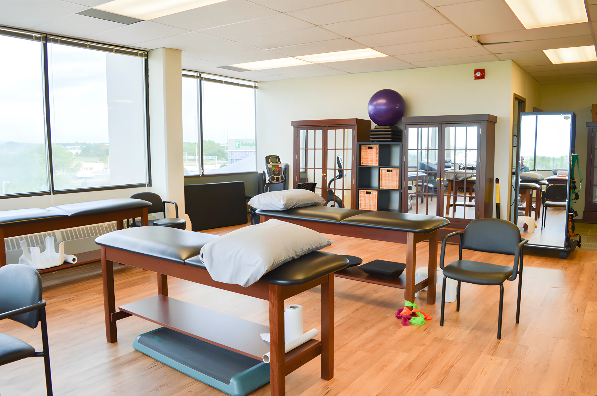
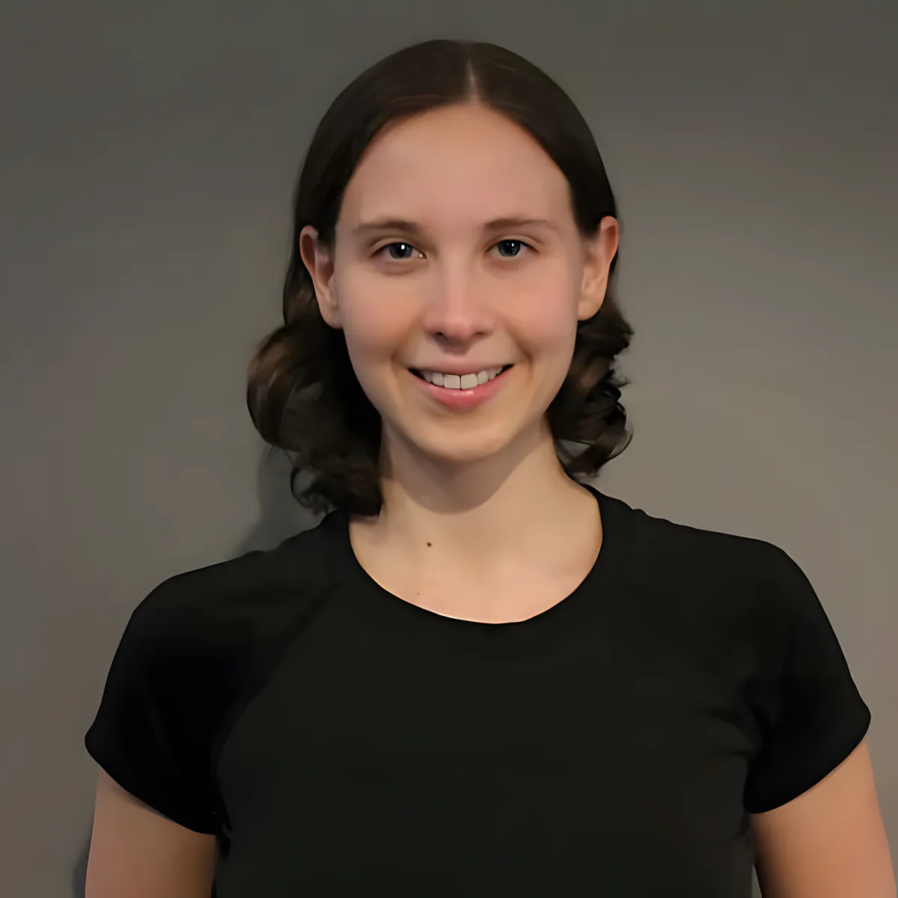

ISM stands for Innovation Science and Medicine. We're a private clinic on the fifth floor at 3027 Harvester Road, with physiotherapists, a massage therapist and a pedorthist on the treating team, and orthopaedic surgeons and sport medicine physicians seeing patients at the same address.

2018 Hamilton Spectator Readers' Choice: Gold, Physiotherapy Clinic.
Physiotherapists
Treatment here is a mix of hands-on work, exercise and explaining what's going on, so you can keep progressing on your own.
Rachel Onishi
Physiotherapist · MPT, Queen's University (2009) · FCAMPT
Rachel's treatment is multi-modal, with a strong focus on manual therapy, functional strengthening and therapeutic modalities. She is an Assistant Clinical Professor (Adjunct) at McMaster University's School of Rehabilitation Science and a Fellow of the Canadian Academy of Manipulative Physiotherapy.
Outside the clinic: the baseball diamond, the trails and the slopes.
Justin Collins
Physiotherapist · MPT, Hon. BSc Kinesiology
Justin holds the CPA Level One Manual Therapy Certificate and has completed acupuncture courses with AFCI and APTEI. He has completed several FITforeGOLF levels and has written and presented on golf injuries, their prevention and rehab. He is an Assistant Clinical Professor (Adjunct) at McMaster, and was voted into the Hamilton Spectator Readers' Choice Top Five physiotherapists in 2018.
Eva Habrowski
Physiotherapist · MPT, McMaster University · Hon. BSc, University of Guelph
Eva holds the CPA Manual Level One Therapy Certificate and takes ongoing courses in acupuncture, manual therapy, exercise science and vestibular rehabilitation. She sees care as collaboration: manual therapy, functional strengthening and education, tailored to each patient.
Jamie treats sports injuries, musculoskeletal pain, post-surgical rehab, hip and knee replacements, complex and chronic pain, dizziness and vestibular disorders, and post-concussion rehab. He has worked alongside family and sports physicians, surgeons, physiatrists, neurologists, audiologists and neuro-optometrists.
Simone Raisi
Physiotherapist · MSc PT, University of Pittsburgh (2016)
Simone practised for six years in the US, where she became a Board Certified Orthopedic Specialist, before moving to Canada in 2023. She uses evidence-based manual therapy, joint and soft tissue mobilization, exercise and pain neuroscience education, and she wants rehab to be fun. She speaks English, Gujarati and Hindi.
Marcia MacVicar
Physiotherapist · BSc PT (Hons), University of Toronto
Marcia has practised for over 15 years. A former junior competitive and varsity badminton player, she focuses on exercise-based therapy, correcting movement patterns and injury prevention for athletes and active people. She completed McMaster's Contemporary Acupuncture Program in 2010.
Monil Soni
Physiotherapist · College of Physiotherapists of Ontario since 2018
Monil is rostered for acupuncture and uses manual therapy, soft tissue work, cupping, taping, and rehab for mild concussion and vestibular conditions. He also treats complex medicine and orthopaedic patients at Joseph Brant Hospital. "My role is to help my patients get back to their daily routines while providing them with the knowledge and tools they need."
Massage & orthotics
Tully Holman
Registered Massage Therapist (CMTO)
A graduate of the Canadian College of Massage and Hydrotherapy, Tully blends Eastern and Western theory, using acupressure, meridian therapy and massage to promote relaxation and decrease pain.

Amanda Murphy
Canadian Certified Pedorthist, C. Ped (C)
HBSc Kinesiology, McMaster. Diploma in Pedorthics, Western University. Certified in 2022. Born and raised in Hamilton.
At the front desk & on the floor
Curtis PartonPhysiotherapy Assistant, Niagara College (2021, presidential honours)
Tesh MeertinsPhysiotherapy Assistant, Humber College (2019)
Sarah ZenoneOffice Administrator, OTA/PTA diploma, Mohawk College
Monica RiveraOffice Administrator, OTA/PTA, Niagara College (2022)
Katrina WilliamsClinic Manager. Billing and clinic questions
Physicians
Dr. Benjamin SmithOrthopaedic surgeon, Clinical Director